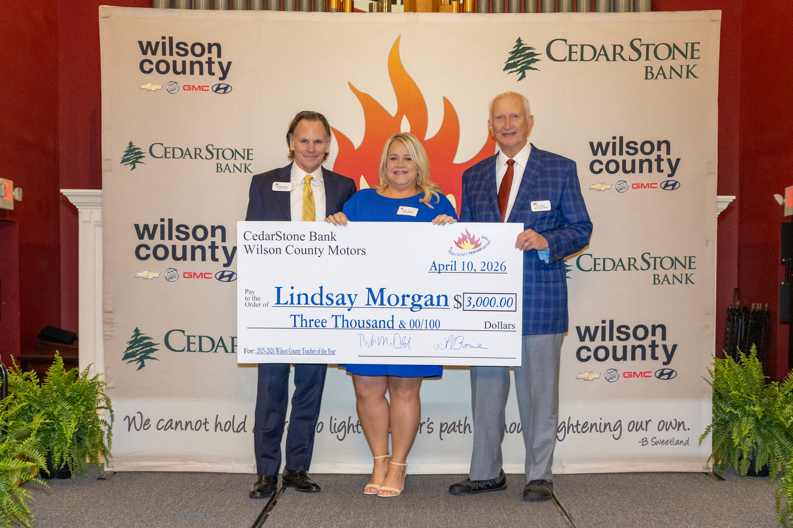
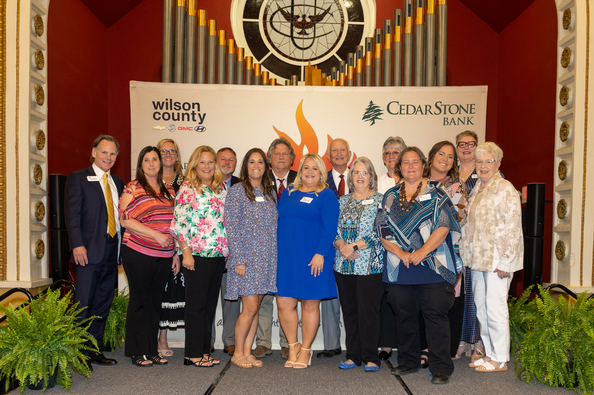
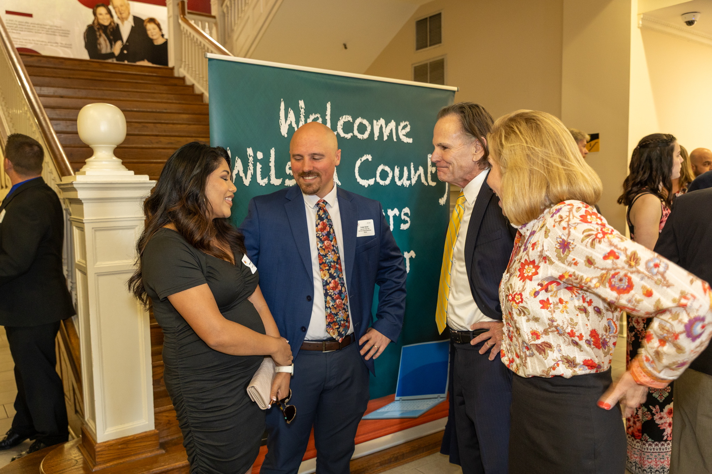
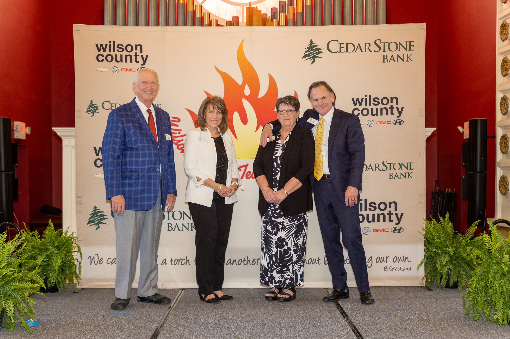
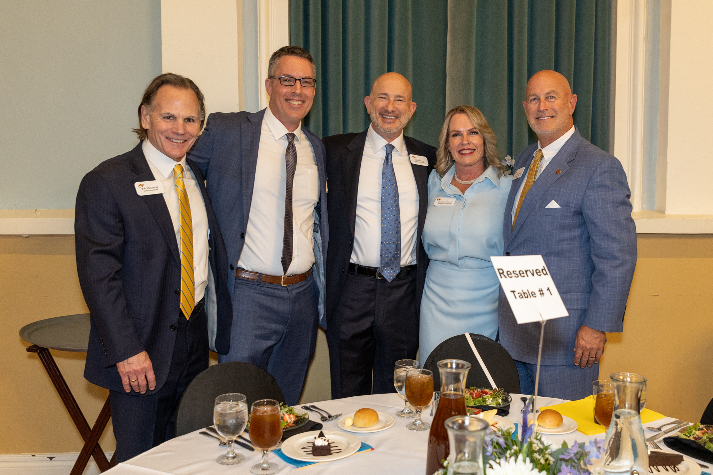
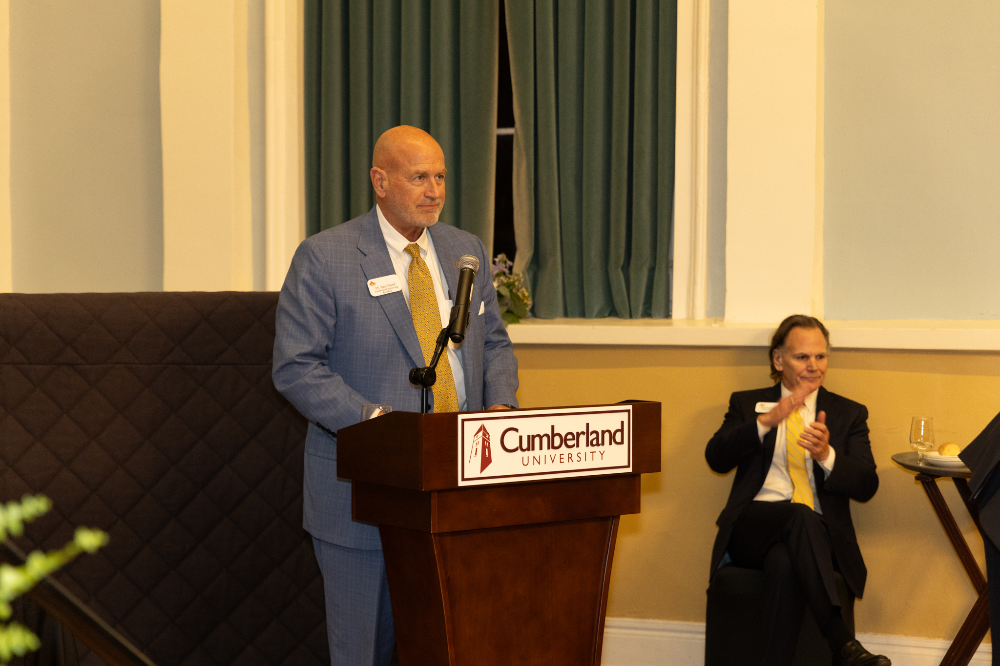
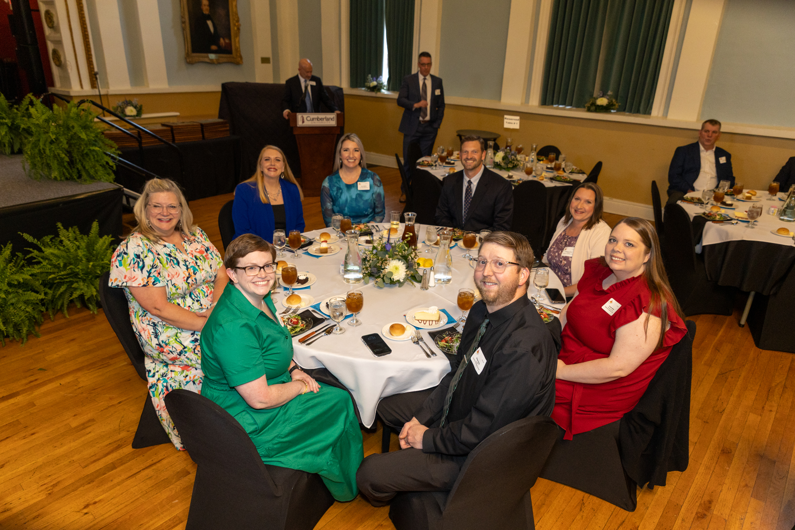

Step 01
School-Level Nomination
Teachers at each of the 34 participating Wilson County schools nominate one of their peers as that school’s Teacher of the Year. Selection is driven by faculty, not administrators.

Co-sponsored by Wilson County Motors & CedarStone Bank · Since 1998
Twenty-eight consecutive years of honoring the educators who shape Wilson County. A peer-nominated, faculty-reviewed program celebrating the most valuable profession in the community.
2025–2026 Honoree
Lindsay Morgan, a culinary arts and work-based learning teacher at Lebanon High School, was named the 2025–2026 Wilson County Teacher of the Year at the 28th annual awards banquet held on April 10 at Cumberland University’s Baird Chapel.
A 22-year veteran of the classroom, Morgan was selected from a field of 34 school-level nominees by an anonymous panel of Cumberland University faculty. She is the second Lebanon High School teacher to win the county award in the past five years, following carpentry teacher Mark Wooten in 2022.
Morgan is currently pursuing a Master’s in Leadership and indicated the $3,000 winner’s check will go toward completing that program. Lebanon High School principal Dr. Scott Walters praised her classroom impact, noting the number of students she has taught over her tenure at LHS.
Reporting: Angie Mayes, Main Street Media · The Wilson Post · Photos by Claudine Ashworth, Custom Color Photo
Origin Story
The program was conceived around 1996 by W.P. Bone III, then-owner of Wilson County Motors, and Bob McDonald, President and CEO of CedarStone Bank. Their shared premise: teaching is the most valuable profession in any community, and the people who do it well deserve public, substantive recognition.
After two years of planning, the inaugural award was presented for the 1998–1999 school year to Alexa Moscardelli. What began as a single county-wide honor has grown to recognize nominees from more than 30 public and private schools across Wilson County Schools, the Lebanon Special School District, and area private academies.
The prize pool has scaled with the program. Earlier honorees received a $1,500 personal check and a $500 school donation; the current award is $3,000 to the teacher and $1,000 to the school. The winner’s name is inscribed on honor plaques at the chamber of commerce and school board offices in Mt. Juliet, Watertown, and Lebanon/Wilson County.
Selection Process
A rigorous, anonymous selection process rooted in the teaching profession itself.
Step 01
Teachers at each of the 34 participating Wilson County schools nominate one of their peers as that school’s Teacher of the Year. Selection is driven by faculty, not administrators.
Step 02
Each nominee submits a self-evaluation responding to five questions and includes comments from their principal, parents of students they’ve taught, and when possible, from the students themselves.
Step 03
An anonymous panel of faculty from Cumberland University’s Education Department reviews all packets and selects the county-wide winner. The announcement is made live at the April banquet at Baird Chapel.
2025–2026 Class
Sort by any column or filter by name, school, or subject area. Click a row to read that teacher’s philosophy and contribution statement from their application packet.
| Teacher | School | Subject | Years |
|---|
The Roll of Honor
Twenty-seven named honorees. Two years paused for the COVID-19 pandemic. Twenty-eight banquets and counting.
From the Banquet
Scenes from the 28th annual Wilson County Teacher of the Year banquet, Cumberland University’s Baird Chapel, April 10, 2026.






Additional banquet photos forthcoming. Credit: Claudine Ashworth / Custom Color Photo for The Wilson Post.
Frequently Asked Questions
Lindsay Morgan, a culinary arts and work-based learning teacher at Lebanon High School, was named the 2025–2026 Wilson County Teacher of the Year on April 10, 2026, at the 28th annual awards banquet held at Cumberland University’s Baird Chapel.
The program is co-sponsored by Wilson County Motors (Wilson County Chevrolet Buick GMC Hyundai) and CedarStone Bank. The two businesses have continuously co-sponsored the award for 28 consecutive years, beginning with the 1998–1999 school year.
The program was conceived around 1996 by W.P. Bone III, owner of Wilson County Motors, and Bob McDonald, President and CEO of CedarStone Bank. The inaugural award was presented for the 1998–1999 school year to Alexa Moscardelli.
Each participating school in Wilson County selects its own Teacher of the Year by peer nomination. School-level winners complete application packets that include philosophy statements, contributions, and comments from principals, parents, and students. An anonymous panel of faculty from Cumberland University’s Education Department reviews the packets and selects the county-wide winner.
The overall county winner receives a personal check for $3,000 and their school receives a $1,000 check. All 34 school-level nominees receive a commemorative plaque. The winner’s name is inscribed on honor plaques displayed at the chamber of commerce and school board offices in Mt. Juliet, Watertown, and Lebanon/Wilson County.
In the 2025–2026 school year, 34 public and private schools across Wilson County participated in the program, including schools from Wilson County Schools and the Lebanon Special School District.
The banquet is traditionally held at Baird Chapel on the campus of Cumberland University in Lebanon, Tennessee. The keynote address is typically delivered by the President of Cumberland University.